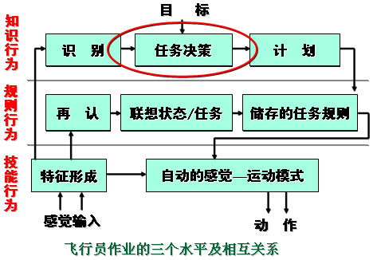
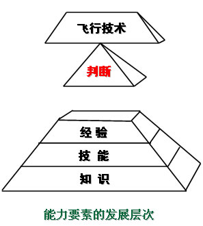
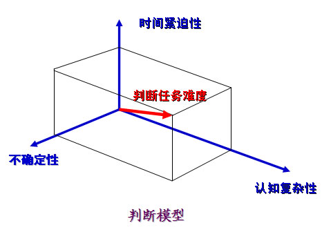
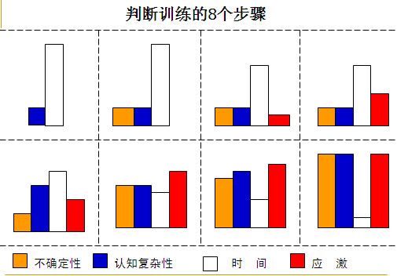

空军心理教育疏导研究中心 主任
空军航空医学研究所 研究员、教授 武国城
本章主要内容
军队心理服务工作是运用心理学原理和方法，维护官兵心理健康，培养官兵良好心理素质的经常性实践活动。
开展心理服务工作，是促进官兵身心健康和全面发展的重要保证，是提高部队凝聚力和战斗力的重要环节，是增强部队思想政治建设科学性的体现，是推动部队建设科学发展的重要基础性工作。
（一）军队心理服务工作的背景和意义
1．军队心理服务工作的背景
军队心理服务工作事关官兵健康成长和部队建设科学发展，事关部队战斗力生成和提高。近些年来，随着学习贯彻科学发展观不断深化，以人为本理念日益深入人心，各级对保持官兵身心健康越来越重视，抓心理服务工作力度越来越大。同时，由于经济社会快速发展，官兵成分发生新的变化，我军使命任务进一步拓展，对做好心理服务工作提出了更高要求。
2．军队心理服务工作的意义
军队心理服务工作，是新形势下部队建设面临的一个重大现实课题。
军队心理服务工作，是贯彻以人为本重要建军治军理念的内在要求。
军队心理服务工作，是增强部队凝聚力战斗力的重要举措。心理素质是战斗力，心理服务出战斗力。
（二）国内外军队心理服务工作的现状和发展
1．外军心理服务工作的现状和发展
美国、英国、瑞典等西方国家军队的心理服务工作起步较早，发展较快，特别是美军的心理服务工作体系比较成熟。
美军开展心理服务工作的组织完备，力量较强。军队、政府和社会团体之间分工协作，互为补充。一是军队心理服务专门机构，主要分为科研体系和心理防治体系两大部分；二是随军牧师；三是民间社团。
美军开展心理服务的主要形式有以下三种：
第一是来自战场的心理服务：对战时应激障碍的心理干预。例如，针对"PTSD" 的主要做法：一是心理训练；二是"自控训练"；三是干预治疗；四是心理释压，如"三热一睡" 。
第二是来自上帝的心理服务：随军牧师无时不在的心理疏导。
第三是来自后方的心理服务：维护切身利益解除军人的后顾之忧。
2007 年美国心理协会在发表的一份名为《美军服役人员及其家庭的心理需求》的研究报告中，详细地分析了执行作战任务的美国军人所面临的困扰。
美军心理服务工作主要具有服务形式的多样性、服务工作的规范性、服务领域的全面性等三个特点。
目前，美国军队心理服务的发展趋势：
一是范围从军队系统渗透到全民的国防系统。
二是层次从微观提高到宏观。从微观的个体心理向中观的集体心理和宏观的社会大群体心理转移，并从过去注重战术、战役心理条件下的心理服务转向战略层面的心理服务，甚至直接为战略提供支持。
三是从注重战争中的心理服务延伸到非战争军事行动中去。
四是服务手段越来越先进。
五是跨文化的心理服务越来越重要。
2．我军心理服务工作的现状和发展
1999年7月《关于改革开放条件下军队思想政治建设若干问题的决定》明确提出："解决现实思想问题，要在分清是非、提高认识的同时，加强心理疏导和行为引导，培养官兵健全的人格和健康的心理，提高自强自立的能力。"
2000年12月18日,总政治部、总后勤部在总结近年来部队实践经验的基础上,就如何做好基层部队的心理教育和疏导工作,联合发文《关于重视做好基层部队心理教育和疏导工作的意见》,再次强调了重视官兵的心理健康问题,加强心理疏导的重要性。
2003年12月，中央军委批准颁布新的《军队政治工作条例》，总结吸收了改革开放以来政治工作的新经验、新成果，增加了"搞好心理疏导"的内容，使心理疏导得到了法规上的确认。
2007年1月颁布实施的《中国人民解放军思想政治教育大纲(试行)》中也明确指出："学习心理科学知识,开展心理咨询活动，做好心理调节工作,培育良好的心理素质"。
2007年10月，胡锦涛在十七大报告中提出要"注重人文关怀和心理疏导"，充分体现了心理疏导在思想政治工作中的重要性。
2009年8月, 在全军心理服务工作座谈会上提出，心理服务工作是新形势下部队建设面临的一个重大现实课题，是贯彻以人为本重要建军治军理念的内在要求，是增强部队凝聚力战斗力的重要举措。
2010年6月新修订的《政工条例》明确提出军队政治工作的主要内容包括心理服务工作。
新世纪新阶段，面对新的使命任务，军队心理服务也将更加趋于完善。
一是我军心理服务的机制将更为健全。
二是我军心理服务人才队伍将更加完备。
三是军队心理服务将更加注重青年官兵的现实需求。
四是心理服务更加突出科学性与实践性的统一。
（一）我军心理服务工作的主要内容
1．抓好心理知识普及教育
帮助官兵学习掌握心理科学知识，是培养官兵良好心理素质的重要前提和基础。把普及心理知识纳入到经常性思想教育工作中去，采取个人自学、授课辅导、专家讲座等形式，发挥报刊、广播、电视、网络等传媒的作用，引导官兵正确认识心理现象，了解常见心理问题，掌握心理调节方法，增强维护心理健康意识。针对官兵履职尽责、成长进步中经常遇到的心理问题，开展挫折教育、青春期心理教育、正确处理人际关系教育等，帮助官兵提高心理认识和自我调适能力，塑造自尊自信、理性平和、积极向上的良好心态。
2．开展心理测试评估
心理测试评估，是科学把握官兵心理状况和个性特征的基本方法，是搞好心理教育训练和疏导治疗的重要依据。建立完善符合我军实际、覆盖各类人员的统一规范的心理测查量表体系，进一步加强应征、应聘人员的心理测评和筛选，逐步在全军各类人员中定期开展心理测评和选拔，建立官兵心理档案。心理测评工作，应由专业人员具体实施，对测评结果严格保密。把心理测查与思想行为分析结合起来，综合评估官兵心理状况，研究提出对策意见，及时搞好跟进服务。
产生原因？
外部原因: 生活事件量表（LES） 社会支持量表（SSRS)
内部原因:艾森克个性问卷（EPQ） 卡特尔个性量表（16PF） 应对方式量表
心理状态？症状自评量表（SCL-90） 抑郁自评量表（SDS） 焦虑自评量表（SAS）
建立协调关系的重要性
心理档案的建立、保管与使用
3．组织心理训练
心理训练，是增强官兵心理素质、激励军心士气、提升作战能力的重要途径。把心理训练纳入部队军事训练之中，加强官兵心理适应能力、稳定能力和承受能力训练，强化战斗精神。依托心理训练场、训练系统和就便器材，设置特定情景，有针对性地开展心理训练，开发军人心理潜能，磨练官兵心理品质，培养团队精神。把指挥员的心理训练摆在突出位置，突出复杂困难条件下的训练，培养各级指挥员处变不惊的心理素质，提高紧急情况下的临机处置能力。
心理训练的作用机制
1. 心理是脑的机能
2. 心理是大脑对客观现实的反映
3. 心理受遗传因素和环境因素的双重影响
团体心理行为训练。


 
心理训练的原则
4．搞好心理咨询疏导
心理咨询疏导，是化解官兵不良心理反应、排除心理困扰的有效手段。广泛开展心理咨询活动，采取面对面咨询、热线电话咨询和专家网上在线咨询等办法，回答官兵提出的心理问题，为官兵进行心理调适和疏导。抓住部队任务转换、重大政策制度出台、官兵面临进退去留和家庭发生变故等容易诱发心理问题的时机，积极开展团体心理咨询和个体疏导，解答官兵心理困惑。重视做好心理问题突出官兵的工作，找准心理症结，及时疏导化解。